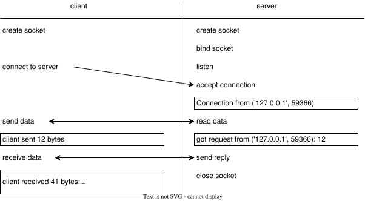

Transferring Files
- Every computer on a network has a unique IP address.
- The Domain Name System (DNS) translates human-readable names into IP addresses.
- Programs send and receive messages through numbered sockets.
- The program that receives a message is responsible for interpreting the bytes in the message.
- To test programs that rely on the network, replace the network with a mock object that simulates message transmission and receipt.
The Internet is simpler than most people realize (as well as being more complex than anyone could possibly comprehend). Most systems still follow the rules they did 30 years ago; in particular, most web servers still handle the same kinds of messages in the same way.
A typical web application is made up of clients and servers. A client program initiates communication by sending a message and waiting for a response; a server, on the other hand, waits for requests and then replies to them. There are typically many more clients than servers: for example, there may be hundreds or thousands of browsers fetching pages from this book's website right now, but there is only one server handling those requests.
This chapter shows how to build a simple low-level network program to move files from one machine to another. Chapter 22 will extend this to show how to build programs that communicate using HTTP. A central concern in both chapters is how to test such programs; while who sends what messages when changes from application to application, the testing techniques largely remain the same.
Using TCP/IP
Almost every program on the web uses a family of communication standards called Internet Protocol (IP). The one that concerns us is the Transmission Control Protocol (TCP/IP), which makes communication between computers look like reading and writing files. Programs using IP communicate through sockets (Figure 1). Each socket is one end of a point-to-point communication channel, just like a phone is one end of a phone call. A socket consists of an IP address that identifies a particular machine and a port on that machine.
The IP address consists of four 8-bit numbers,
which are usually written as 93.184.216.34;
the Domain Name System (DNS)
matches these numbers to symbolic names like example.com
that are easier for human beings to remember.
A port is a number in the range 0-65535
that uniquely identifies the socket on the host machine.
(If an IP address is like a company's phone number,
then a port number is like an extension.)
Ports 0-1023 are reserved for well-known TCP/IP applications like web servers;
custom applications should use the remaining ports
(and should allow users to decide which port,
since there's always the chance that two different people will pick 1234 or 6789).
A basic socket client looks like this:
import socket
CHUNK_SIZE = 1024
SERVER_ADDRESS = ("localhost", 8080)
message = "message text"
sock = socket.socket(socket.AF_INET, socket.SOCK_STREAM)
sock.connect(SERVER_ADDRESS)
sock.sendall(bytes(message, "utf-8"))
print(f"client sent {len(message)} bytes")
received = sock.recv(CHUNK_SIZE)
received_str = str(received, "utf-8")
print(f"client received {len(received)} bytes: '{received_str}'")
We call it "basic" rather than "simple" because there's a lot going on here. From top to bottom:
- We import some modules and define two constants.
The first,
SERVER_ADDRESS, consists of a host identifier and a port. (The string"localhost"means "the current machine".) The second,CHUNK_SIZE, will determine the maximum number of bytes in the messages we send and receive. - We use
socket.socketto create a new socket. The valuesAF_INETandSOCK_STREAMspecify the protocols we're using; we'll always use those in our examples, so we won't go into detail about alternatives. - We connect to the server,
send our message as a bunch of bytes with
sock.sendall, and print a message saying the data's been sent. - We then read up to a kilobyte from the socket with
sock.recv. If we were expecting longer messages, we'd keep reading from the socket until there was no more data. - Finally, we print another message.
The corresponding server has just as much low-level detail:
import socket
CHUNK_SIZE = 1024
def handler():
host, port = socket.gethostbyname("localhost"), 8080
server_socket = socket.socket()
server_socket.bind((host, port))
server_socket.listen(1)
conn, address = server_socket.accept()
print(f"Connection from {address}")
data = str(conn.recv(CHUNK_SIZE), "utf-8")
msg = f"got request from {address}: {len(data)}"
print(msg)
conn.send(bytes(msg, "utf-8"))
conn.close()
This code claims a socket, listens until it receives a single connection request, reads up to a kilobyte of data, prints a message, and replies to the client. Figure 2 shows the order of operations and messages when we run the client and server in separate terminal windows.

There's a lot going on here,
so most people who have to program at this level
use Python's socketserver module,
which provides two things:
a class called TCPServer that manages incoming connections
and another class called BaseRequestHandler
that does everything except process the incoming data.
In order to do that,
we derive a class of our own from BaseRequestHandler
that provides a handle method
(Figure 3).
Every time TCPServer gets a new connection,
it creates a new object of our class
and calls that object's handle method.
Using TCPServer and BaseRequestHandler as starting points,
our server is:
import socketserver
CHUNK_SIZE = 1024
SERVER_ADDRESS = ("localhost", 8080)
class MyHandler(socketserver.BaseRequestHandler):
def handle(self):
data = self.request.recv(CHUNK_SIZE)
cli = self.client_address[0]
msg = f"got request from {cli}: {len(data)}"
print(msg)
self.request.sendall(bytes(msg, "utf-8"))
if __name__ == "__main__":
server = socketserver.TCPServer(SERVER_ADDRESS, MyHandler)
server.serve_forever()
These two classes use a different design than what we've seen before.
Instead of creating one class for programmers to extend,
the socketserver module puts the low-level details in TCPServer,
which can be used as-is,
and asks users to create a plug-in class from BaseRequestHandler
for the server to use.
This approach isn't intrinsically better or worse than
the "derive and override" approach we've seen before;
they're just two more tools in a software designer's toolbox.
Chunking
Our latest server reads data exactly once
using self.request.recv(CHUNK_SIZE)
with CHUNK_SIZE set to 1024.
If the client sends more than a kilobyte of data,
our server will ignore it.
This can result in deadlock:
the server is trying to send a reply
while the client is trying to send the rest of the message,
and since neither is listening,
neither can move forward.
Increasing the size of the memory buffer
used to store the incoming message
won't make this problem go away:
the client (or a malicious attacker) could always send more data
than we have allowed for.
Instead,
we need to modify the server so that it keeps reading data
until there is nothing left to read.
Each time the handle method shown below goes around the loop,
it tries to read another kilobyte.
If it gets that much,
it appends it to data and tries again.
If it gets less than a kilobyte,
we have reached the end of the transmission
and can return the result:
class FileHandler(socketserver.BaseRequestHandler):
def handle(self):
print("server about to start receiving")
data = bytes()
while True:
latest = self.request.recv(CHUNK_SIZE)
print(f"...server received {len(latest)} bytes")
data += latest
if len(latest) < CHUNK_SIZE:
print("...server breaking")
break
print("server finished received, about to reply")
self.request.sendall(bytes(f"{len(data)}", "utf-8"))
We can modify the client to send data in chunks as well,
but we handle this a little differently.
Each call to conn.send in the function below
tries to send all of the remaining data.
The value returned by the function call tells us
how many bytes were actually sent.
If that number gets us to the end of the data we're sending,
the function can exit the loop.
If not,
it adds the number of bytes sent to total
so that it knows where to start sending
the next time around:
def send_file(conn, filename):
with open(filename, "rb") as reader:
data = reader.read()
print(f"client sending {len(data)} bytes")
total = 0
while total < len(data):
sent = conn.send(data[total:])
print(f"...client sent {sent} bytes")
if sent == 0:
break
total += sent
print(f"...client total now {total} bytes")
return total
While we're here, we might as well write a function to create a socket:
def make_socket(host, port):
conn = socket.socket(socket.AF_INET, socket.SOCK_STREAM)
conn.connect((host, port))
return conn
and another to wait for the acknowledgment from the server:
def receive_ack(conn):
received = conn.recv(CHUNK_SIZE)
return int(str(received, "utf-8"))
The main program is then:
def main(host, port, filename):
conn = make_socket(host, port)
bytes_sent = send_file(conn, filename)
print(f"client main sent {bytes_sent} bytes")
bytes_received = receive_ack(conn)
print(f"client main received {bytes_received} bytes")
print(bytes_sent == bytes_received)
When we run the client and server, the client prints:
client sending 1236 bytes
...client sent 1236 bytes
...client total now 1236 bytes
client main sent 1236 bytes
client main received 1236 bytes
True
and the server prints
server about to start receiving
...server received 1024 bytes
...server received 212 bytes
...server breaking
server finished received, about to reply
Testing
Testing single-process command-line applications is hard enough. To test a client-server application like the one above, we have to start the server, wait for it to be ready, then run the client, and then shut down the server if it hasn't shut down by itself. It's easy to do this interactively, but automating it is difficult because there's no way to tell how long to wait before trying to talk to the server and no easy way to shut the server down.
A partial solution is to use a mock object (Chapter 9)
in place of a real network connection
so that we can test each part of the application independently.
To start,
let's refactor our server's handle method
so that it calls self.debug instead of printing directly:
class LoggingHandler(socketserver.BaseRequestHandler):
def handle(self):
self.debug("server about to start receiving")
data = bytes()
while True:
latest = self.request.recv(BLOCK_SIZE)
self.debug(f"...server received {len(latest)} bytes")
data += latest
if len(latest) < BLOCK_SIZE:
self.debug("...server breaking")
break
self.debug("server finished received, about to reply")
self.request.sendall(bytes(f"{len(data)}", "utf-8"))
The debug method takes any number of arguments and passes them to print:
def debug(self, *args):
print(*args)
The handle method in this class relies on
the self.request object created by the framework
to send and receive data.
We can create a testable server by deriving a class from LoggingHandler
that inherits the handle method (which we want to test)
but creates a mock request object
and overrides the debug method so it doesn't print logging messages:
class MockHandler(LoggingHandler):
def __init__(self, message):
self.request = MockRequest(message)
def debug(self, *args):
pass
Notice that we don't call the constructor of LoggingHandler
in the constructor of MockHandler.
If we did,
we would trigger a call to the constructor of BaseRequestHandler,
which would then be upset because we haven't defined a host or a port.
The class we use to create our mock request object needs three things:
-
A constructor that records the data we're going to pretend to have received over a socket and does whatever other setup is needed.
-
A
recvmethod with the same signature as the real object'srecvmethod. -
A
sendallmethod whose signature matches that of the real thing as well.
The whole class is:
class MockRequest:
def __init__(self, message):
self._message = message
self._position = 0
self._sent = []
def recv(self, max_bytes):
assert self._position <= len(self._message)
top = min(len(self._message), self._position + BLOCK_SIZE)
result = self._message[self._position:top]
self._position = top
return result
def sendall(self, outgoing):
self._sent.append(outgoing)
With it, we can now write unit tests like this:
def test_short():
msg = bytes("message", "utf-8")
handler = MockHandler(msg)
handler.handle()
assert handler.request._sent == [bytes(f"{len(msg)}", "utf-8")]
The key to our approach is the notion of fidelity: how close is what we test to what we use in production? In an ideal world they are exactly the same, but in cases like this it makes sense to sacrifice a little fidelity for testability's sake.
Summary
Figure 4 summarizes the idea introduces in this chapter. While understanding how to send data over a network is important, knowing how to test programs that interact with the outside world is just as important.
Exercises
Chunk Sizes
What happens if the client tries to send zero bytes to the server?
What happens if it sends exactly CHUNK_SIZE bytes or CHUNK_SIZE+1 bytes?
Efficiency
Suppose a client sends \( N \) chunks of data to a server. The current implementation will copy the first chunk \( N-1 \) times, the second chunk \( N-2 \) times, and so on, so that the total copying work is \( O(N^2) \). Modify the server so that it collects chunks in a list and concatenates them at the end instead.
Saving and Listing Files
-
Modify the protocol used by this chapter's client and server so that the client sends the file's name, a newline, and then the file's contents, and the server saves the file under that name.
-
Modify the protocol again so that the client can send the word
dirfollowed by a newline and no other data and the server will send back a list of the files in its current working directory.
A Socket Client Class
Build a socketclient class that works like the socketserver class
but sends data instead of handling requests.
How useful is it in practice?